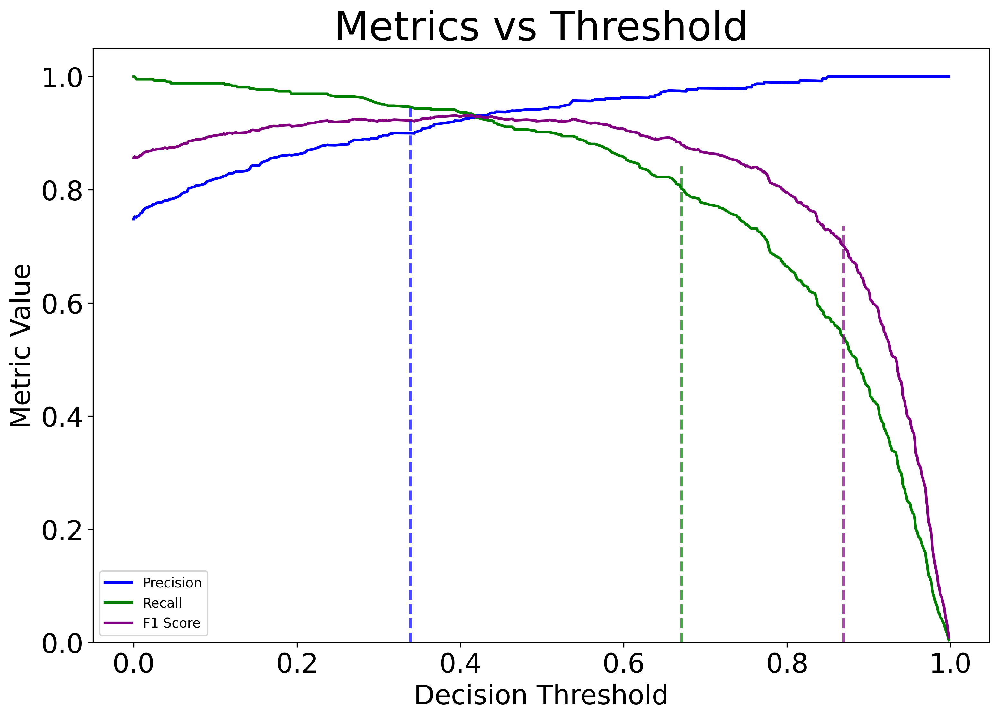

Calibration Analysis User Guide
Please read the “Anaysis User Guide” before reading this guide. This guide provides instructions on how to calibrate the performance of either user provided variant effect prediction scores or a system provided VEP.
The steps for running a calibration analysis are similar to those for running a benchmark analysis.
To run a calibration analysis do the following in a python environment, i.e. jupyter lab:
import pandas as pd
from aigct.container import VEBenchmarkContainer
container = VEBenchmarkContainer("<config>/aigct.yaml")
analyzer = container.analyzer
metrics = container.analyzer.compute_calibration_metrics(
"CANCER", user_vep_scores_df, "UserVep",
variant_effect_source=None, variant_query_criteria=None,
pathogenic_fraction_bins=10)
Metrics is an object that contains the results of the calibration analysis. See the the API documentation for the aigct.analyser.VEAnalyzer.compute_calibration_metrics method for a detailed explanation of the parameters passed to that method.
Calibration Analysis Summary
You can view the information stored in the metrics object in various ways. Run the following code to get a high level textual summary:
container.reporter.write_calibration_summary(metrics)
It will generate output similar to the following:
Summary calibration metrics for Variant Effect Prediction Benchmark: 2025/07/21 15:06:41
VEP Analyzed: ALPHAM
Total number of variants in analysis: 572
Binned Scores and Labels
SCORE_RANGE LEFT_BOUNDARY_EXCLUSIVE RIGHT_BOUNDARY_INCLUSIVE MEAN_SCORE NUM_VARIANTS NUM_POSITIVE_LABELS NUM_NEGATIVE_LABELS
-0.00-0.07 -0.000909 0.066719 0.028976 45 5 40
0.07-0.13 0.066719 0.133347 0.099937 23 3 20
0.13-0.20 0.133347 0.199976 0.160158 23 5 18
0.20-0.27 0.199976 0.266605 0.230557 15 2 13
0.27-0.33 0.266605 0.333233 0.294272 16 8 8
0.33-0.40 0.333233 0.399862 0.364605 15 4 11
0.40-0.47 0.399862 0.466491 0.431856 23 13 10
0.47-0.53 0.466491 0.533119 0.507449 9 5 4
0.53-0.60 0.533119 0.599748 0.565044 22 16 6
0.60-0.67 0.599748 0.666377 0.633018 26 21 5
0.67-0.73 0.666377 0.733005 0.694051 25 23 2
0.73-0.80 0.733005 0.799634 0.769641 43 39 4
0.80-0.87 0.799634 0.866263 0.835255 55 52 3
0.87-0.93 0.866263 0.932891 0.902392 92 92 0
0.93-1.00 0.932891 0.999520 0.965103 140 140 0
See the the API documentation for the aigct.reporter.VEAnalysisReporter.write_calibration_summary method for a detailed explanation of the parameters passed to that method.
Plot Results
Issue the following to plot the results.
container.plotter.plot_calibration_curves(metrics, 0.9, 0.9, 0.95)
This will generate a series of presentation ready plots and tables:
Pathogenic Fraction by score interval
Histogram of variant scores by pathogenicity
Precision, recall, and F1 score versus threshold values
Here is an example of some of the plots generated:
{kind=link}
{kind=link}
See the the API documentation for the aigct.plotter.VEAnalysisPlotter.plot_calibration_curves method for more details.
Export Results
Issue the following to export the raw calibration analysis result data underlying the plots and tables to csv files that can be used to produce your own plots or to do further analysis.
container.exporter.export_calibration_results(metrics, “<export_dir>”)
The second parameter is the name of a directory where you want the results to be exported. It will generate a series of files in a uniquely named subdirectory of this directory.
See the the API documentation for the aigct.exporter.VEAnalysisExporter.export_calibration_results method for more details.